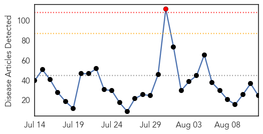
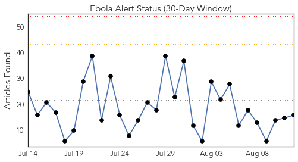
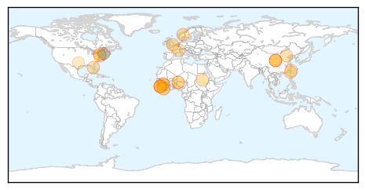

Toggle navigation
Early Warning
Daily Alerts
Ebola
Aug 12, 2015
30 Day Trends
Web: 1
alerts
, 0
warnings
Twitter: 0
alerts
, 0
warnings
Top Articles:
1.000
Ebola cases stay in single digits, but all pose high risks
0.999
The most from the coast
0.998
'I survived Ebola but NINE of my family died so I want to stop others suffering'
0.997
Spanish doctor optimistic over tests on new Ebola vaccine
0.997
MSF warns ‘fatigue’ will derail efforts to win ebola fight « Awoko Newspaper
0.996
Ebola Vaccine 100% Effective in Trials
0.994
Ebola’s victims of the future: pregnant women
0.993
Promising Ebola vaccine
0.970
War on Ebola gets a shot in the arm as cooperation continues
0.963
Style overshadows substance for de Blasio after Legionnaires' outbreak
0.945
Beijing to maintain aid to Ebola-hit Guinea: China FM
0.935
Mock drill: Leadership class explores how to cover an Ebola scare
0.907
10 of the most interesting infection control developments this year
0.879
With new UN development goals, focus shifts away from infectious disease
0.830
A milestone in Africa: One year without a case of polio
0.806
Taiwan, U.S. kick off workshop on MERS for regional partners
0.794
Taiwan, U.S. kick off MERS workshop for regional partners
0.782
China pledges continued support for Ebola-hit nations
0.776
United Nations Ebola Outbreak Update August 2015 – 41st Edition - Sierra Leone
0.750
A Milestone in Africa: One Year Without a Case of Polio
0.667
Frequent flyers in Birmingham address concerns about air travel
0.659
ADRA Liberia donates US$1.2m medical equipment
0.555
Africa celebrates a year without polio
0.532
China, Africa to join hands in post-Ebola cooperation
0.504
Cuomo and de Blasio Call Truce After Legionnaires’ Disease Spat
Top Tweets:
0.955
Latest Ebola report: 3 cases - 2 in Guinea, 1 in Sierra Leone. Stats good but details concerning. Not known how Guinea cases caught it
0.942
Attention, World: The Ebola Fight Isn't Over - TIME http://t.co/QM3x3hJwZY ebola EVD
0.920
In US Ebola Response: Empty ETUs to Expend Over US$5M > Ganta - Front Page Africa http://t.co/gIONDd8e3H ebola EVD
0.913
Kenya refuses refuge to chimps from Ebola-hit Liberia - Reuters http://t.co/PhxEBVl0U0 ebola EVD
0.904
Ebola Epidemic's Legacy Of Fear And Corruption - Hartford Courant http://t.co/6uygSPfqqG ebola EVD
0.847
The biggest infectious disease threat we face isn't Ebola – it's our short ... - The Conversation US http://t.co/2btqV9xBYB ebola EVD
0.816
The end of Ebola may be in sight in Sierra Leone, with only 4 recorded cases http://t.co/A607ddL8BJ
0.742
Shedding of Ebola Virus in an Asymptomatic PregnantWoman @NEJM http://t.co/sIOAvvJE4p
0.705
KC company builds container to transport Ebola patients - KMBC Kansas City http://t.co/x4lzmStaWy ebola EVD
0.689
Aujourd'hui nous vous faisons découvrir la magnifique chanson de Jean Charles Ngimbi "Ebola ça suffit": "Tu as... http://t.co/CNcPU85e0s
0.670
How The Department of Defense Helped Confront Ebola - Georgetown Public Policy Review http://t.co/eSIb0kL7jq ebola EVD
0.648
12 Aug - news pouch on avianflu avianinfluenza Ebola EbolaResponse MERS is here: http://t.co/PdqcTaIDnM
0.624
Spotlight: China, Africa to join hands in post-Ebola cooperation - Xinhua http://t.co/WS0ZLZhgd0 ebola EVD
0.517
In US Ebola Response - Empty ETUs to Expend Over US$5 Million - http://t.co/NaiI6Jl8yj http://t.co/0MAsqvzjzy ebola EVD
0.504
Attention, World: The Ebola Fight Isn't Over - TIME http://t.co/pYt9KRsO4a
0.502
'I survived Ebola but NINE of my family died so I want to stop others suffering' - http://t.co/L4gbwrglxU http://t.co/HgBjJ21PyJ ebola EVD
Web/News Articles

Tweets

Article Locations

Article Confidences